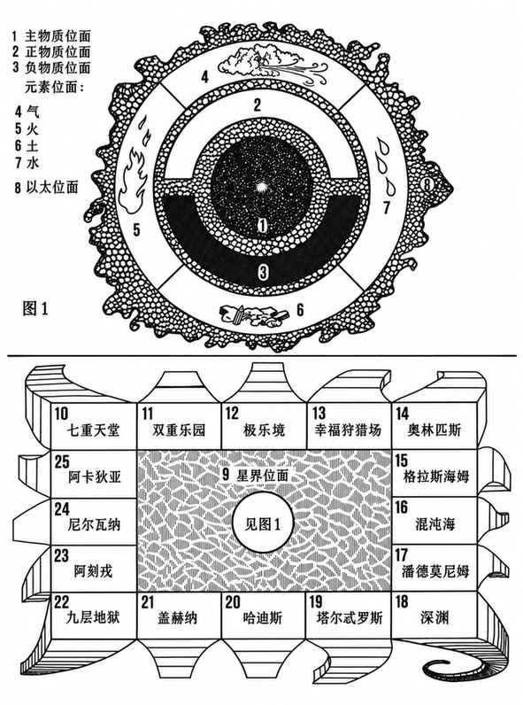

附录 IV：已知位面 · Appendix IV: The Known Planes of Existence
ADVANCED DUNGEONS & DRAGONS 的多元宇宙中存在无数平行宇宙与存在位面。所有这些“世界”并存，但它们究竟有多么真实，完全取决于战役裁判如何构建。本附录的图表与说明只展示与常态世界相连的位面；平行宇宙未列入其中，其是否真实存在也可以由裁判决定。
内层位面（1–8） · The Inner Planes
1. 主物质位面（或物质位面）：容纳宇宙及其所有平行世界。地球与大多数战役所在的世界都属于此位面。 2. 正物质位面：能量与光之地，是许多生命与活力的源头，也是善的力量来源。 3. 负物质位面：反物质与负能量之地，是不死生物的力量来源，也是邪恶滋长之处。 4. 气元素位面。 5. 火元素位面。 6. 土元素位面。 7. 水元素位面。 8. 以太位面：环绕并触及其他所有内层位面及宇宙的无尽平行世界，却不属于其中任何一个。能进入以太状态并返回物质形态的生物，可借此在内层位面之间移动；详见后文。
外层位面（9–25） · The Outer Planes
9. 星界位面：从主物质位面延展至非空间，其中无数漩涡通向平行的主物质位面以及外层位面。它可用于穿越宇宙，或前往强大存在的居所——外层位面；这些位面也是阵营理想与诸神的源头。星界位面只接触外层位面的上层，详见后文。 10. 七重天堂：绝对守序善良。 11. 双重乐园：守序中立善良。 12. 极乐境：绝对善良。 13. 幸福狩猎场：混乱中立善良。 14. 奥林匹斯诸界：绝对混乱善良。 15. 格拉斯海姆诸界（阿斯加德、英灵殿、华纳海姆等）：中立混乱善良。 16. 混沌海：绝对混乱（熵）。 17. 潘德莫尼姆诸界：中立混乱邪恶。 18. 深渊的666层：绝对混乱邪恶。 19. 塔尔忒罗斯诸界：混乱中立邪恶。 20. 哈迪斯的“三重阴霾”：绝对中立邪恶。 21. 盖赫纳熔炉：中立守序邪恶。 22. 九层地狱：绝对守序邪恶。 23. 阿刻戎冥界：守序中立邪恶。 24. 尼尔瓦纳诸界：绝对中立（守序）。 25. 阿卡狄亚诸界：守序中立善良。
以太旅行 · Ethereal Travel
角色可通过多种方式进入以太状态，包括以太化药膏、魔法物品、法术与灵能学科。以太位面渗透的任何位面都可以抵达；角色也能在以太状态下从一个位面前往另一个位面。
以太位面中的移动与旅行存在危险。有些怪物能够部分存在于此，有些则在以太位面自由游荡。最严重的危险是以太旋风：这种强大的移动力量可能将个体卷入另一个世界或位面，也可能使其在以太空间中迷失许多天。
以太旅行不会令人疲劳，速度也很快。处于以太状态的生物无需进食、饮水、休息或睡眠。地下城主掌握以太位面的遭遇表、移动规则以及以太旋风及其后果的完整资料。
星界旅行 · Astral Travel
角色可通过多种方式进行星界旅行，包括法术与灵能学科。星界位面只接触无尽的主物质位面和外层位面的16个“第一层”；除主物质位面外，它不接触任何内层位面。星界旅行可用于在各宇宙中移动，或前往外层位面的第一层。
星界旅行会因星界位面中的怪物而变得危险。最危险的是心灵之风：它可能将旅行者吹离航线，使其迷失、被送往不想去的世界或位面，或多日无法与外界接触；也可能扯断银绳（见星界旅行、星界投射等法术），令个体永久死亡。
与以太旅行相同，星界旅行速度很快；旅行者无需进食、饮水、休息或睡眠。地下城主也掌握星界位面的遭遇与旅行资料，玩家会在冒险过程中按需要逐渐获知。
以太位面与星界位面上的战斗 · Ethereal and Astral Combat
角色可以在以太位面或星界位面施法、近战等。这些行为通常只影响同一位面上的其他生物，但也可能影响部分存在或能够在一个或两个位面运作的生物。法术可从以太位面施放至主物质位面；除前述情况外，不能从星界位面施法至主物质位面。
某些魔法武器在这两个位面上仍保有魔力，另一些则不然。只有非常强大的存在（恶魔领主、魔鬼公爵、神性生物、诸神等）才能伤害星界躯体以外的存在；通常星界躯体被毁只会使银绳返回物质躯体，并在一段时间内阻止再次星界旅行。极强大的存在可能扯断银绳，同时杀死星界躯体与物质躯体。以太位面上的战斗伤害是真实伤害。若角色的物质躯体在星界旅行期间被毁，角色也会死亡。
